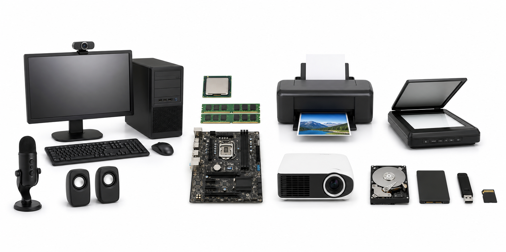
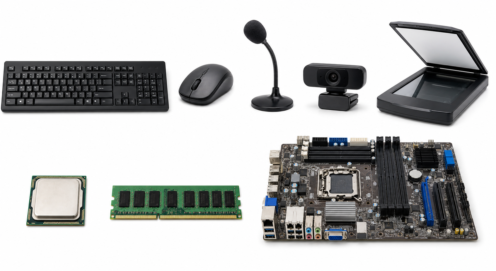
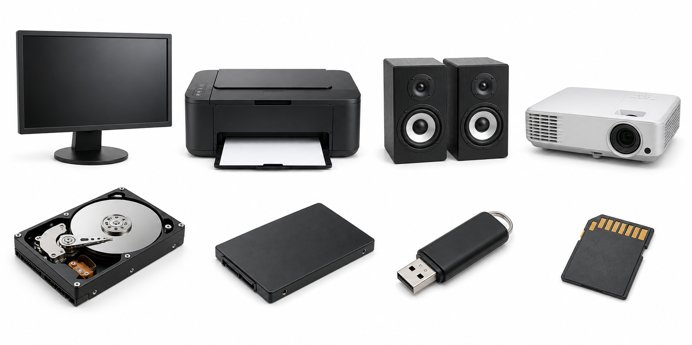

1. รับข้อมูล
อุปกรณ์ที่นำคำสั่ง เสียง ภาพ และเอกสารเข้าสู่เครื่อง
ตัวอย่าง: แป้นพิมพ์ เมาส์ ไมโครโฟน เว็บแคม สแกนเนอร์
รับข้อมูล → ประมวลผล → แสดงผล → จัดเก็บ

อุปกรณ์ที่นำคำสั่ง เสียง ภาพ และเอกสารเข้าสู่เครื่อง
ตัวอย่าง: แป้นพิมพ์ เมาส์ ไมโครโฟน เว็บแคม สแกนเนอร์
CPU คำนวณและควบคุม RAM พักข้อมูลที่กำลังใช้ เมนบอร์ดเชื่อมทุกส่วนเข้าด้วยกัน
นำผลลัพธ์ออกมาให้เราเห็น ได้ยิน หรือได้เป็นกระดาษ
ตัวอย่าง: จอภาพ เครื่องพิมพ์ ลำโพง เครื่องฉายภาพ
บันทึกไฟล์ไว้ใช้ภายหลัง แม้ปิดเครื่องข้อมูลยังคงอยู่
ตัวอย่าง: HDD, SSD, แฟลชไดรฟ์ การ์ดหน่วยความจำ

รับตัวอักษร ตัวเลข และคำสั่ง ใช้พิมพ์รายงาน
รับการชี้ คลิก และลาก ใช้เลือกคำสั่งบนหน้าจอ
รับเสียงพูดและเสียงรอบตัวเข้าสู่คอมพิวเตอร์
รับภาพนิ่งและภาพเคลื่อนไหว เหมาะกับการเรียนออนไลน์
เปลี่ยนภาพหรือเอกสารบนกระดาษให้เป็นไฟล์
คำนวณ ตัดสินใจ และควบคุม เปรียบเหมือนสมองของเครื่อง
พักข้อมูลที่กำลังใช้ชั่วคราว ข้อมูลหายเมื่อปิดเครื่อง
แผงวงจรหลัก เชื่อม CPU, RAM และอุปกรณ์ภายใน
กล่องที่บรรจุชิ้นส่วนภายใน กล่องทั้งใบไม่ใช่ CPU

แสดงภาพ ข้อความ และวิดีโอบนหน้าจอ
แสดงข้อความหรือภาพออกมาบนกระดาษ
แสดงผลเป็นเสียง เพลง และเสียงพูด
ฉายภาพจากเครื่องให้มีขนาดใหญ่ เหมาะกับการสอน
เก็บข้อมูลด้วยจานแม่เหล็ก ความจุมากแต่มีชิ้นส่วนเคลื่อนไหว
เก็บข้อมูลด้วยชิป ทำงานเร็วและไม่มีจานหมุน
ขนาดเล็ก พกพาง่าย ใช้ย้ายไฟล์ระหว่างเครื่อง
การ์ดขนาดเล็ก ใช้กับกล้องและอุปกรณ์พกพา